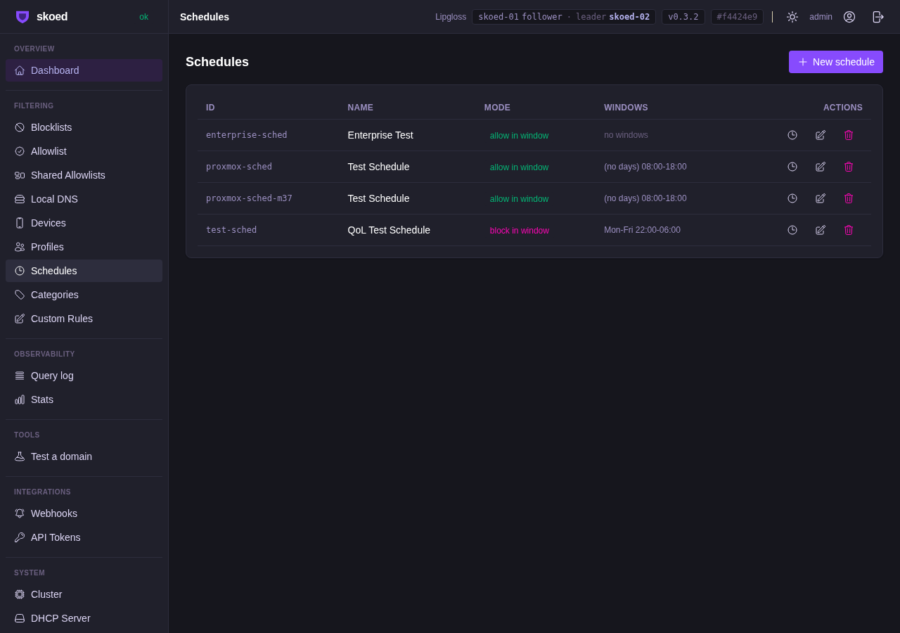
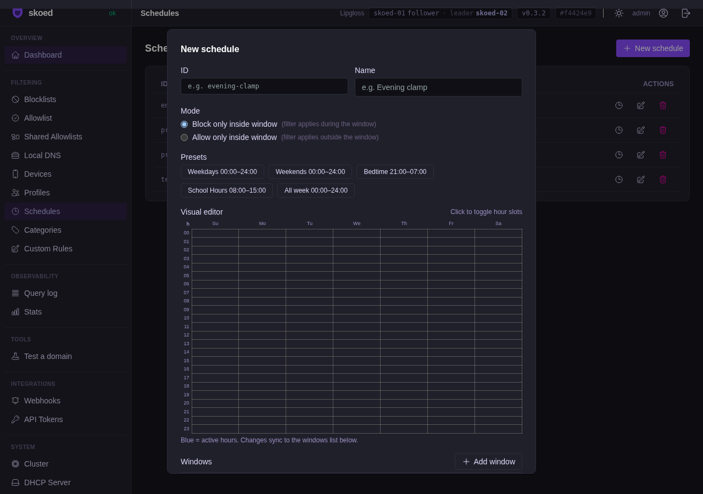
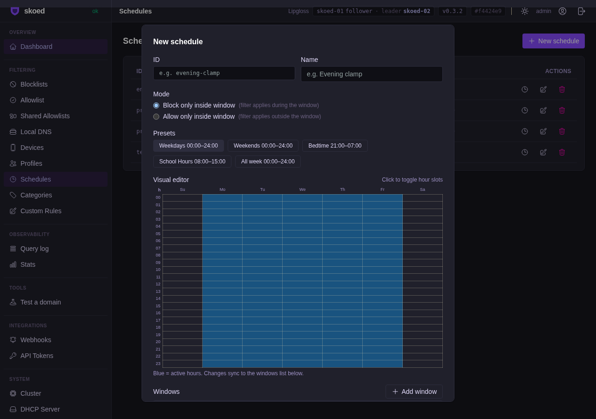

M37 — skoed
Schedule Binding Web UI
Visual 7×24h hour grid editor, template presets, and conflict validation for schedule bindings
6passed
0failed
6total
4/4Proxmox cluster checks
All pass
Acceptance Tests
| Test | FSID | Description | Status | Duration |
|---|---|---|---|---|
| TestScheduleCreate | FS-ScheduleCreate | POST schedule with time windows → 201 | PASS | 2.1s |
| TestScheduleBindingEnforcesTime | FS-ScheduleBindingEnforcesTime | Blocked inside window, allowed outside | PASS | 2.4s |
| TestScheduleBindingConflictPrevented | FS-ScheduleBindingConflictPrevented | Two bindings for same profile/day → 409 | PASS | 2.1s |
| TestScheduleWeeklyPattern | FS-ScheduleWeeklyPattern | Mon–Fri windows applied correctly | PASS | 2.3s |
| TestScheduleDelete | FS-ScheduleDelete | DELETE schedule removes binding | PASS | 2.0s |
| TestScheduleExport | FS-ScheduleExport | Schedules included in config export | PASS | 2.2s |
Proxmox 3-Node Cluster Validation
GET /schedules returns array
POST schedule created
GET schedule by ID
Schedule replicated to node2
Screenshots — Proxmox Cluster (skoed-01)

ss-37-01 — Schedules page

ss-37-02 — Create schedule: template preset buttons

ss-37-03 — 7×24h visual hour grid (click-to-toggle)

ss-37-04 — Weekdays preset applied to grid